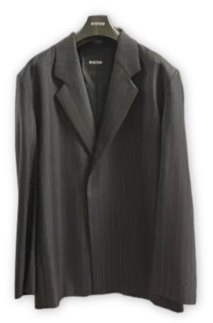
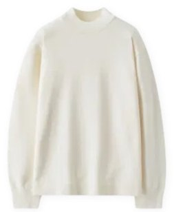
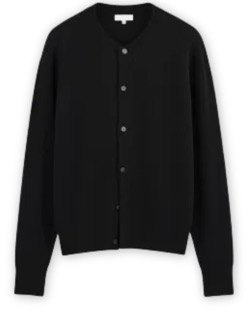
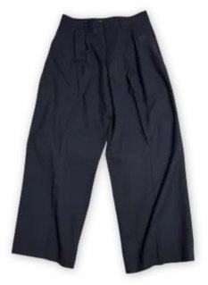
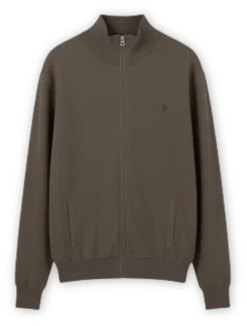

낮 17°, 저녁 8°로 일교차가 커요. 니트 이너라 셔츠보다 따뜻하고, 실내에선 블레이저를 벗어도 정돈돼 보여요. 신발은 비에 강한 가죽 로퍼예요. 결혼식 후 저녁까지 이어지는 일정이에요. 모던한 무채색 위주로, 색은 많아야 하나만 넣었어요.
1 / 6
추천
그레이 터틀넥 니트 + SYSTEM HOMME 블랙 블레이저
셔츠 대신 얇은 그레이 터틀넥을 넣어 블랙, 그레이만 쓴 무채색 셋업이에요. 블랙 수트에 차분한 톤의 파인게이지 터틀넥을 이너로 쓰면 타이 없이도 정돈돼 보여서, 하객룩의 격식은 지키면서 셔츠보다 모던하고 따뜻해요. 저녁 8°까지 내려가도 목이 덮여 있어 코트 없이 버틸 만해요.
니트그레이 터틀넥 니트
목까지 올라오는 얇은 니트라 블레이저 라펠 사이로 깔끔한 V자가 생겨요.

블레이저SYSTEM HOMME 블랙 핀스트라이프 블레이저
셋업의 상의예요. 니트를 받쳐 입어도 어깨선이 살아 있어 격식이 유지돼요.
정장바지SOLID HOMME 블랙 테이퍼드 정장바지
블레이저와 같은 블랙이라 셋업처럼 이어져요.
로퍼로스트가든 블랙 레더 로퍼
가죽이라 비에도 괜찮고, 니트 이너와 어울리는 가벼운 격식이에요.
숄더백르메르 블랙 호보 숄더백
축의금 봉투, 우산, 지갑을 넣기 좋아요.
대안
올블랙: 미나브 블랙 모크넥 니트 + SYSTEM HOMME 블레이저
니트까지 블랙으로 맞춘 톤온톤 버전이에요. 핀스트라이프의 결만 남아 가장 모던하고 시크해 보여요. 너무 어두워 보이면 실버 목걸이를 니트 위로 꺼내 포인트를 주세요.
니트미나브 블랙 모크넥 니트
터틀넥보다 목이 낮은 모크넥이라 덜 답답해요.
블레이저SYSTEM HOMME 블랙 핀스트라이프 블레이저
셋업의 상의예요. 니트를 받쳐 입어도 어깨선이 살아 있어 격식이 유지돼요.
정장바지SOLID HOMME 블랙 테이퍼드 정장바지
블레이저와 같은 블랙이라 셋업처럼 이어져요.
로퍼로스트가든 블랙 레더 로퍼
가죽이라 비에도 괜찮고, 니트 이너와 어울리는 가벼운 격식이에요.
숄더백르메르 블랙 호보 숄더백
축의금 봉투, 우산, 지갑을 넣기 좋아요.
목걸이바호스튜디오 실버 목걸이
올블랙에 은빛 하나로 시선을 모아요.
대안
밝게: 미나브 아이보리 모크넥 니트 + SYSTEM HOMME 블레이저
아이보리 니트로 얼굴 쪽을 밝힌 버전이에요. 블랙과 아이보리의 대비가 화이트 셔츠보다 부드럽고, 낮 결혼식에 화사해 보여요.

니트미나브 아이보리 모크넥 니트
순백보다 따뜻한 아이보리라 신부 드레스 색과 겹칠 걱정이 덜해요.
블레이저SYSTEM HOMME 블랙 핀스트라이프 블레이저
셋업의 상의예요. 니트를 받쳐 입어도 어깨선이 살아 있어 격식이 유지돼요.
정장바지SOLID HOMME 블랙 테이퍼드 정장바지
블레이저와 같은 블랙이라 셋업처럼 이어져요.
로퍼로스트가든 블랙 레더 로퍼
가죽이라 비에도 괜찮고, 니트 이너와 어울리는 가벼운 격식이에요.
숄더백르메르 블랙 호보 숄더백
축의금 봉투, 우산, 지갑을 넣기 좋아요.
옷장 자동 조합
POTTERY 화이트 스트라이프 셔츠 + ART IF ACTS 블랙 가디건
같은 날씨와 격식 기준(무채색 위주, 포인트 컬러는 하나까지)으로 옷장에서 자동으로 고른 조합이에요.
셔츠POTTERY 화이트 스트라이프 셔츠

가디건ART IF ACTS 블랙 가디건

정장바지노이어 네이비 투턱 정장바지
구두STCO 블랙 윙팁 구두
크로스백생로랑 블랙 나일론 크로스백
옷장 자동 조합
파브레가 화이트 스트라이프 셔츠 + POLO RALPH LAUREN 브라운 니트 집업
같은 날씨와 격식 기준(무채색 위주, 포인트 컬러는 하나까지)으로 옷장에서 자동으로 고른 조합이에요.
셔츠파브레가 화이트 스트라이프 셔츠

니트 집업POLO RALPH LAUREN 브라운 니트 집업
정장바지시도 브라운 투턱 정장바지
구두Loake 블랙 캡토 구두
크로스백생로랑 블랙 나일론 크로스백
옷장 자동 조합
POTTERY 화이트 스트라이프 셔츠 + TONYWACK 브라운 글렌체크 블레이저
같은 날씨와 격식 기준(무채색 위주, 포인트 컬러는 하나까지)으로 옷장에서 자동으로 고른 조합이에요.

 니트그레이 터틀넥 니트
니트그레이 터틀넥 니트 정장바지SOLID HOMME 블랙 테이퍼드 정장바지
정장바지SOLID HOMME 블랙 테이퍼드 정장바지 로퍼로스트가든 블랙 레더 로퍼
로퍼로스트가든 블랙 레더 로퍼 숄더백르메르 블랙 호보 숄더백
숄더백르메르 블랙 호보 숄더백